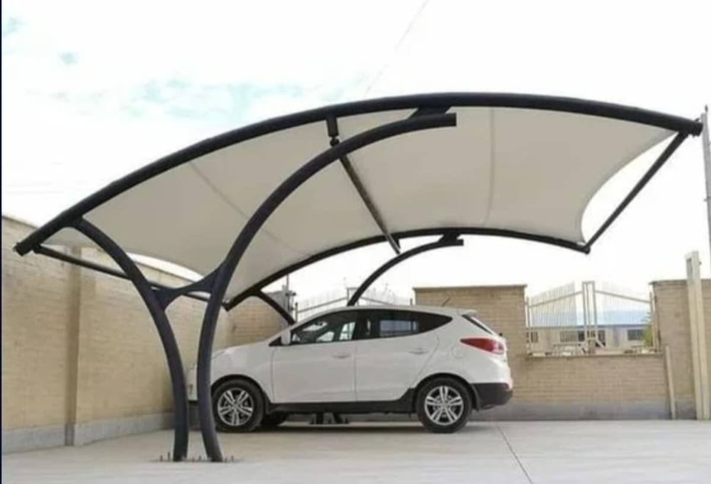
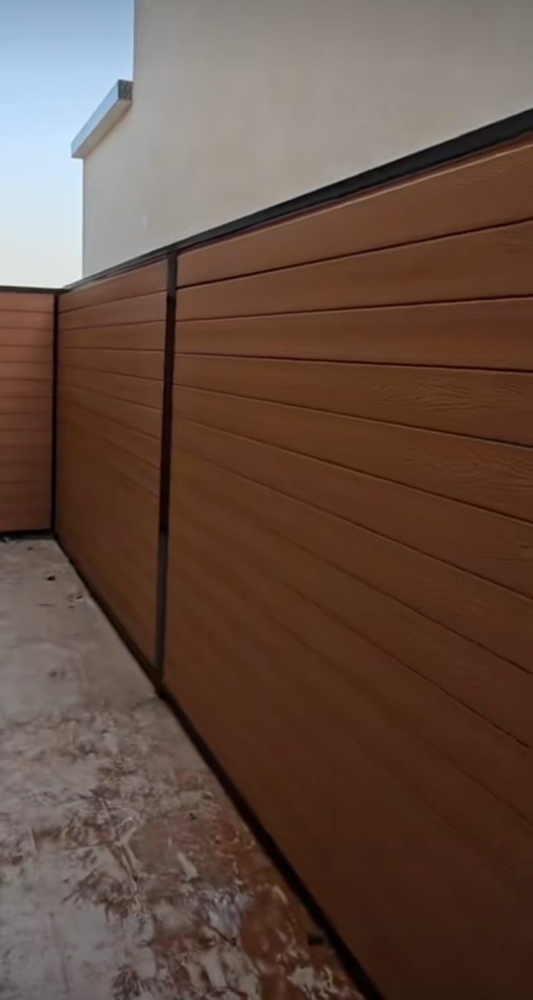
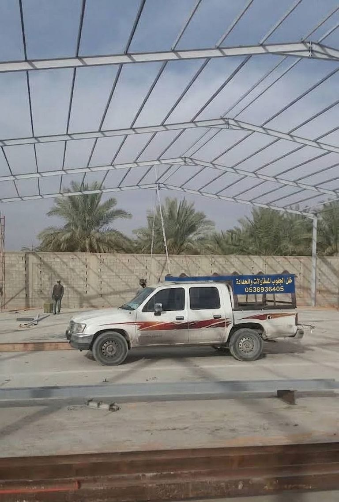
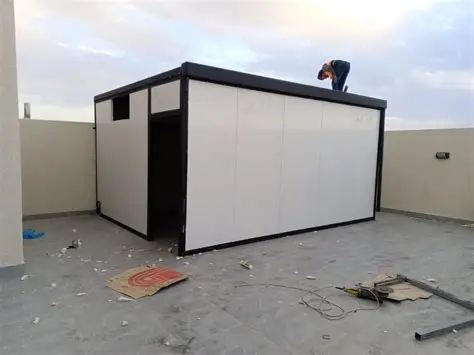
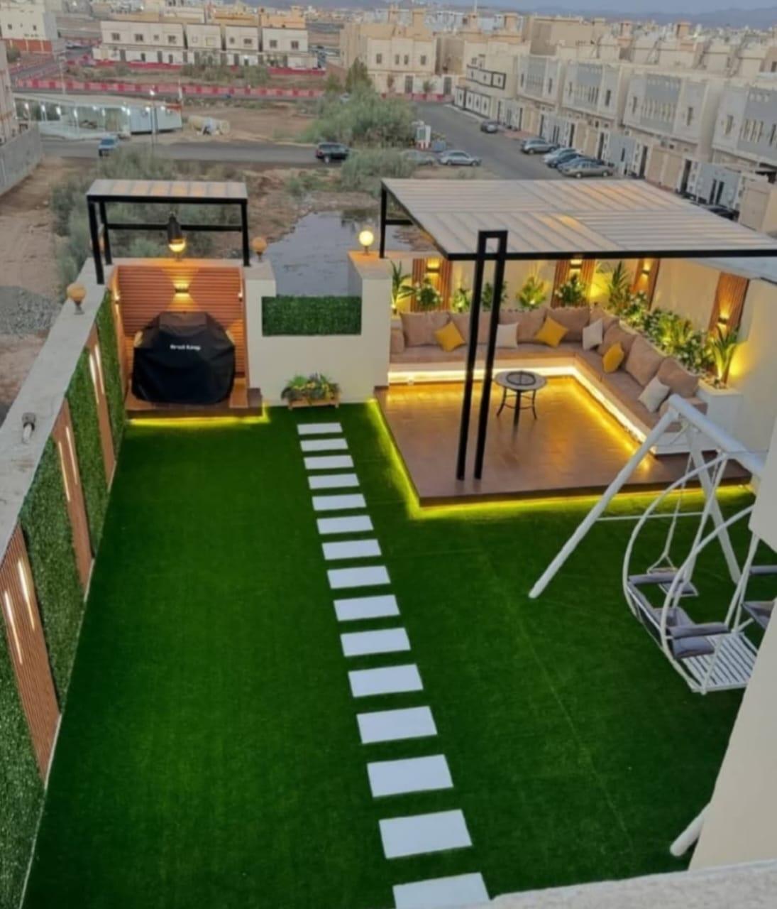
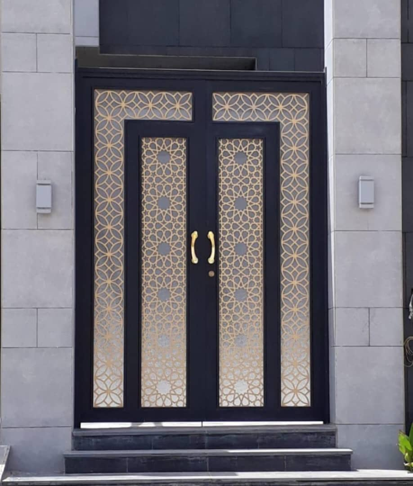
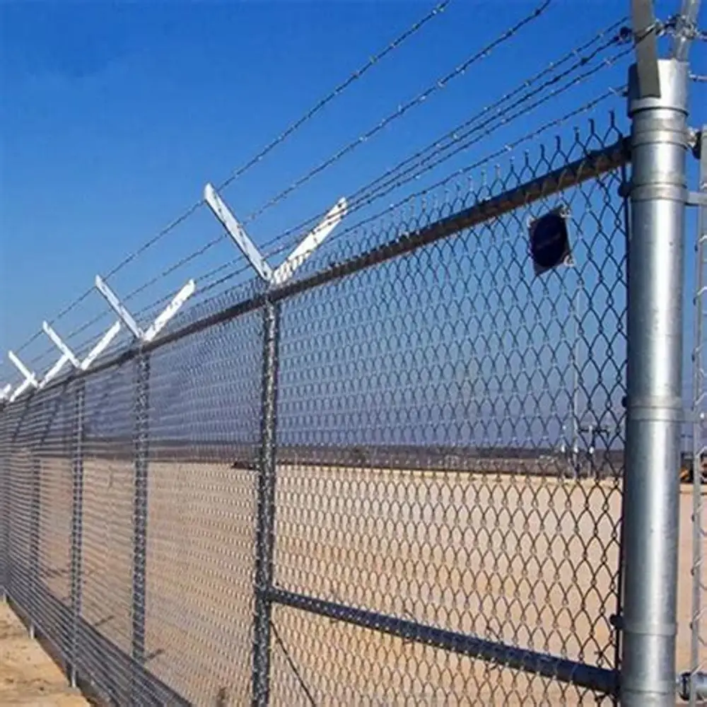
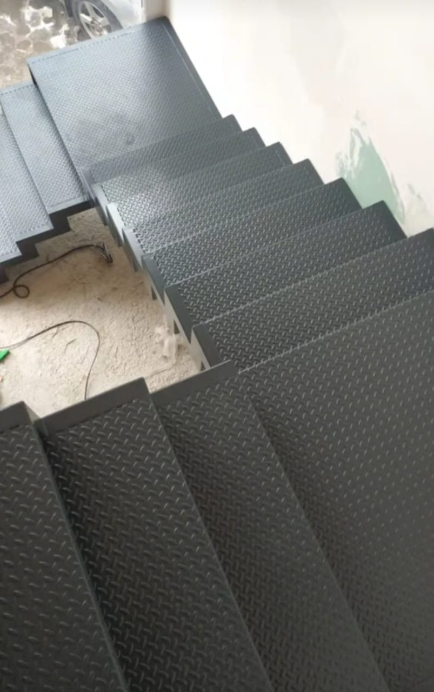
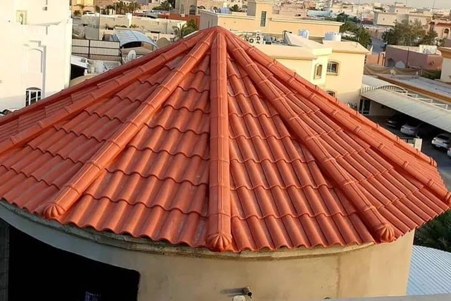

متخصصون في تنفيذ وتركيب مظلات السيارات، السواتر، الساندوتش بنل، الهناجر، البرجولات، والقرميد بأعلى معايير الجودة، وحلول عزل متكاملة وضمان شامل على كافة أعمالنا.
نمنحك الأمان المطلق وعقود ضمان موثقة على ثبات الهياكل الحديدية، جودة اللحام والدهانات المقاومة للصدأ، وكفاءة عزل المياه لكافة أعمال المظلات والساندوتش بنل.
ننفذ ونركب أعمال المظلات والسواتر والساندوتش بنل والهناجر والبرجولات والقرميد والحدادة العامة في أبها وخميس مشيط. إذا كنت تبحث عن مقاول تنفيذ أو حداد يصل إلى موقعك، نحدد الخدمة والخامة والمقاس بحسب طبيعة المشروع.
تركيب مظلات سيارات وجلسات حدائق بأحدث الأشكال المودرن (PVC، لكسان، قماش، وخشبي) مقاومة للحرارة والأمطار العزيرة بأبها والخميس.
تركيب سواتر شرائح ومجدول وبديل الخشب لتأمين الخصوصية التامة للفلل والمنازل بمواصفات عالية وألوان عصرية تقاوم الرطوبة والرياح.
توريد وتركيب ألواح الساندوتش بنل المعزولة حرارياً ومائياً لتغطية الأسقف، الملاحق، والمستودعات بأعلى كفاءة عزل بمنطقة عسير.
تصميم وتشييد الهناجر والمستودعات التجارية والصناعية والمخازن بأعلى المواصفات الهندسية وهياكل حديدية مجلفنة وآمنة.
تركيب برجولات حديدية وخشبية وبديل الخشب للحدائق والأسطح والجلسات الخارجية بتصاميم راقية تضفي لمسة جمالية على المكان.
تركيب القرميد المعدني والفخاري للأسطح والواجهات والملاحق بأساليب تثبيت احترافية تفادياً لتسربات المياه وبمظهر معماري جميل.
تصفح نماذج من المشاريع والأعمال الحقيقية التي نفذتها ظل الجنوب للمقاولات العامة والحدادة بأبها وخميس مشيط بمنتهى الاحترافية والاحتراف.

تركيب مظلات سيارات حديثة من الـ PVC الكوري والشنكو وجلسات قماشية وحديدية تقاوم الرياح والأمطار بأبها وخميس مشيط.
تصفح صور المعرض
تركيب سواتر بديل الخشب (WPC)، السواتر الحديدية الشرائح والمجدول، وسواتر القماش بأقصى درجات الخصوصية والأمان.
تصفح صور المعرض
تأسيس وتشييد الهناجر والمستودعات وقاعات التخزين بأعلى معايير السلامة والأمان وضمان معتمد على الهياكل الإنشائية.
تصفح صور المعرض
تركيب الغرف العازلة، الملاحق، وتغطية الأسقف بألواح الساندوتش بنل المعزولة حرارياً ومائياً بكفاءة عالية.
تصفح صور المعرض
تصميم وتنفيذ برجولات حدائق منزلية وجلسات خارجية للأسطح والحدائق بتصاميم خشبية وحديدية مودرن ومميزة.
تصفح صور المعرض
تصنيع وتركيب أبواب حديد خارجية فخمة قص ليزر وحديد وبديل الخشب مشغول يجمع بين الأمان الأقصى والمظهر الجمالي المودرن.
تصفح صور المعرض
تركيب شبوك أمنية وشبوك مزارع وأراضي بجميع أنواعها المجلفنة والحرارية المعتمدة بأبها وخميس مشيط.
تصفح صور المعرض
تفصيل وتركيب كافة أعمال الحدادة العامة، الدرابزينات، السلالم الطوارئ، والتصاميم الحديدية المخصصة حسب الطلب.
تصفح صور المعرض
تركيب القرميد المعدني والفخاري للأسطح والواجهات والملاحق بأساليب تثبيت احترافية تفادياً لتسربات المياه وبمظهر معماري جميل
تصفح صور المعرضنحن لسنا مجرد منفذي أعمال حدادة، بل متخصصون في ابتكار وتصميم المظلات والسواتر والهناجر والبرجولات التي تجمع بين متانة الإنشاء وروعة النظر. نلتزم بأعلى معايير الجودة والتصاميم الحديثة مع استخدام أفضل المواد المقاومة لتقلبات المناخ بالمنطقة الجنوبية.
نفخر بتقييمات عملائنا بخمس نجوم، وهي وسام شرف يدفعنا دائماً للاستمرار في تقديم أعلى المعايير الفنية والمهنية.
نحن نسعد بخدمتك أينما كنت في أبها وخميس مشيط. أرسل تفاصيل مشروعك أو حدد رغبتك بالمعاينة الفورية وسيتصل بك مهندسنا المختص لمساعدتك فوراً.
نخدم جميع المخططات والأحياء بمدينة أبها وخميس مشيط، وننفذ مشاريعنا أيضاً في كافة مناطق الجنوب: عسير، نجران، جازان، والباحة، مع توفير معاينة ومقاسات سريعة عبر فرقنا الميدانية.
نوفر لكم إجابات تفصيلية وشاملة لكل ما يدور بذهنكم حول المواصفات، الضمانات، العزل، مقاومة الأمطار والرياح، والتكلفة.
نحن متخصصون في توريد وتركيب مظلات السيارات والجلسات، السواتر بجميع أنواعها، ألواح الساندوتش بنل، تمديد وتشييد الهناجر والمستودعات، البرجولات وتنسيق الحدائق، تركيب القرميد، التسوير بالشبوك الأمنية، وجميع أعمال الحدادة العامة بأبها وخميس مشيط.
تختلف الأسعار بناءً على سماكة الحديد، نوع القماش (PVC كوري أو ألماني، بولي إيثيلين)، ونوع الدهانات والمساحة الإجمالية. نقدم دائماً أفضل الأسعار التنافسية بالمنطقة الجنوبية مع معاينة ورفع مقاسات مجانية لإعطاء عرض سعر تفصيلي.
تعتبر مظلات الـ PVC الكوري والألماني وزن 1100 جرام، ومظلات الشنكو المعزول، ومظلات اللكسان المقاوم للكسر من أفضل الأنواع تحملاً للأمطار الغزيرة، الرياح، والحرارة بالمنطقة الجنوبية.
نعم، نعتمد طريقة تثبيت هندسية صارمة باستخدام مرابط وفليشرات فولاذية وقواعد حديدية ذات سماكات عالية، مع دهان الحديد بمواد عازلة ومضادة للصدأ لضمان الأمان التام واستقرار المظلة في جميع الفصول.
الساندوتش بنل يمتاز بكونه مادة عازلة للحرارة والصوت والماء بنسبة 100%، خفيف الوزن وخالي من الأحمال الثقيلة، وسريع التركيب لبناء الغرف والملاحق والمستودعات والتغطيات بأعلى كفاءة.
نوفر جميع السماكات المعتمدة بدءاً من 3 سم حتى 10 سم بحشوات الفوم العازل المعتمد (EPS أو PU) مع ألواح صاج مجلفن ومدهون مقاوم للصدأ والظروف الجوية.
بالتأكيد، توفر ظل الجنوب ضمانات معتمدة يمتد أثرها من 5 إلى 10 سنوات يشمل جودة الهيكل الحديدي، التثبيت، عدم تسريب المياه، وثبات ألوان القماش والدهانات.
تجمع بين فخامة الخشب الطبيعي وقوة البلاستيك المعالج، فهي مقاومة للماء والرطوبة والنمل الأبيض تماماً، لا تحتاج لدهان أو صيانة، ولا تتشقق أو تبهت بفعل الشمس والأمطار.
سواتر الشرائح توفر حجب رؤية بنسبة 100% ومظهر مودرن مغلق تماماً. أما السواتر المجدولة فترسم شكلاً متداخلاً يسمح بمرور درجة خفيفة من الهواء مع توفير نسبة حجب رؤية تصل لـ 90%، وكلاهما بمستوى أمان ممتاز.
نوفر الشبوك المجلفنة، الشبوك المغطاة بالبلاستيك الأخضر، والشبوك الأمنية الشائكة بأ ارتفاعات ومواصفات معتمدة لتأمين المزارع، الأراضي، والكسارات بأبها وخميس مشيط.
نعم، نصمم وننفذ برجولات حديدية بتغطية لكسان أو قماش أو بديل خشب لتكوين جلسات خارجية راقية ومريحة للأسطح والحدائق ومداخل الفلل بأحدث الديكورات.
نوفر تغطيات بألواح اللكسان الشفاف والملون المضاد للكسر، أقمشة الـ PVC والشرائح، وكذلك التغطيات الخشبية المسكوبة التي تمنح ظل حقيقي ومظهر استثنائي.
نعم، نقوم بتنفيذ جميع مراحل تشييد الهناجر والمستودعات والقاعات من التأسيس والقواعد والجسور الحديدية الثقيلة، وحتى التغطية بالشينكو أو الساندوتش بنل وفق المعايير والهندسية.
نقوم بتصنيع أبواب ليزر مودرن، أبواب حديد مشغول كلاسيك، وأبواب سحاب وعادية للفلل والمباني بدهانات نارية حرارية عالية المقاومة للصدأ.
القرميد عبارة عن قطع حجرية أو معدنية معالجة تستخدم لتغطية وعزل أسطح الفلل والواجهات والمجالس الخارجية، ويمنح المبنى شكلاً معمارياً فخماً وعزلاً حرارياً ومائياً ممتازاً.
نوفر القرميد الفخاري الوطني والإيطالي، والقرميد المعدني الكوري الخفيف والأكثر تحملاً للظروف المناخية مع عزل كامل بمواد العزل المائي والحراري.
كلاهما ممتاز وعالي الجودة؛ القماش الكوري (وزن 1100 جرام) هو الأكثر انتشاراً وطلباً لصلابته وسعره المتميز، بينما القماش الألماني يتميز بسماكته العالية ومقاومته الأقصى للحريق والحرارة.
نعم، نوفر خدمة صيانة وشحذ وتجديد المظلات والسواتر، بما في ذلك تغيير القماش الممزق أو التالف بقماش PVC جديد، وإعادة دهان وصيانة الهياكل الحديدية.
نصنع ونركب درابزين السلالم، سلالم الطوارئ الخارجية، حمايات النوافذ والشبابيك، أسوار الحدائق، والأبواب الأوتوماتيكية بكافة أشكالها ومقاساتها.
نعم، نوفر خدمة المعاينة الميدانية ورفع المقاسات الدقيقة مجاناً بالكامل في كافة أحياء ومخططات أبها وخميس مشيط والمناطق القريبة منها.
يمكنكم الاتصال بنا مباشرة على الرقم `+966538936405` أو الضغط على زر الواتساب لإرسال أبعاد ومساحات موقعكم، وسيقوم فنينا بإعطائكم التسعير والتنسيق للمعاينة الميدانية فوراً.
تستغرق المظلات والسواتر المتوسطة عادة من يوم إلى يومين (24 - 48 ساعة) بعد الاتفاق واختيار التصميم وتجهيز الحديد في ورشتنا.
يعتمد ذلك على مساحة المشروع؛ الملاحق والغرف الصغيرة تستغرق من 3 إلى 5 أيام عمل، بينما المستودعات والهناجر الكبيرة تحدد لها مدة زمنية دقيقة في العقد بناءً على حجم المخطط.
نغطي جميع أحياء مدينة أبها وخميس مشيط، بالإضافة إلى أحد رفيدة، الواديين، سراة عبيدة، محايل عسير، وكافة القرى والمخططات المجاورة بمنطقة عسير.
نستخدم دهانات الأساس الناري (البريمر) المضادة للصدأ يليها دهان الوجه النهائي بطلاء ناري فرن أو ألكيد عالي الجودة يقاوم العوامل الجوية المتقلبة والرطوبة.
نعم، نوفر تشكيلة واسعة من الألوان (البيج، الأبيض، الرصاصي، الأسود الملكي، الخشبي) ويمكننا كمبيوتر الكمية لتكون مطابقة لدهان جدران الفيلا أو المبنى تماماً.
السواتر القماشية اقتصاديّة وتوفر مظهراً هادئاً وحجباً للرؤية، بينما السواتر الحديدية (الشرائح والمجدول) توفر أماناً أعلى وعمراً افتراضياً أطول وقدرة أعلى على تحمل الرياح القوية.
نعم، نفذنا العديد من السواتر ذات الارتفاعات العالية التي تصل إلى 4 أو 6 أمتار مع تدعيم حوائط الحوش بجسور وقواعد حديدية قوية ومتينة جداً لضمان الثبات والأمان.
نعم، ننفذ المظلات المعلقة المثبتة على الجدران والأسوار مباشرة باستخدام أكتاف حديدية ذراع مقوى، مما يوفر مساحة كاملة لحركة وسهولة ركن السيارات دون أي عوائق.
لأننا نضمن لك الدقة والسرعة في التنفيذ، استخدام خامات حديد وقماش وساندوتش بنل أصلية ومعتمدة، التزام كامل بالضمان والمواعيد، وأسعار مناسبة جداً تناسب الجميع بالمنطقة الجنوبية.
لا تخرج دون الاستفادة من المعاينة الميدانية المجانية. اترك بياناتك الآن وسيتواصل معك فنينا فوراً لتقديم التسعير الدقيق وعرض الكتالوجات عبر الواتساب.